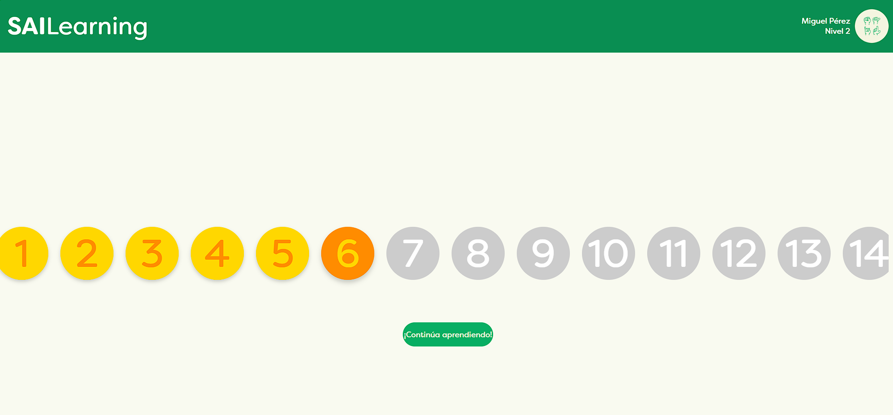

Abstract
SAI Learning aims to develop a platform for learning Mexican Sign Language (LSM). This platform leverages Artificial Intelligence, specifically Computer Vision, to detect and interpret users' signs. Through Machine Learning methods such as neural networks, a model was trained to classify, identify and show the signs. By employing classification models, it accurately recognizes and classifies signs, enhancing the learning experience. Additionally, we explore the use of Natural Language Generation models to interpret signs into spoken language, further aiding comprehension. The platform is interactive and web-based, offering a user-friendly interface for learners. Through this project, we aim to provide an innovative and accessible tool for LSM education.
Architecture
- Frontend: html, css, js
- Backend: Python Django
- Database: MS SQL Server
Website architecture
- Model: Computer Vision
- Framework: Pickle
- API: Python Django
AI Model Architecture
Media
Links
Authors
 Esteban Sierra Baccio
Esteban Sierra BaccioProject Manager
June 8, 2024